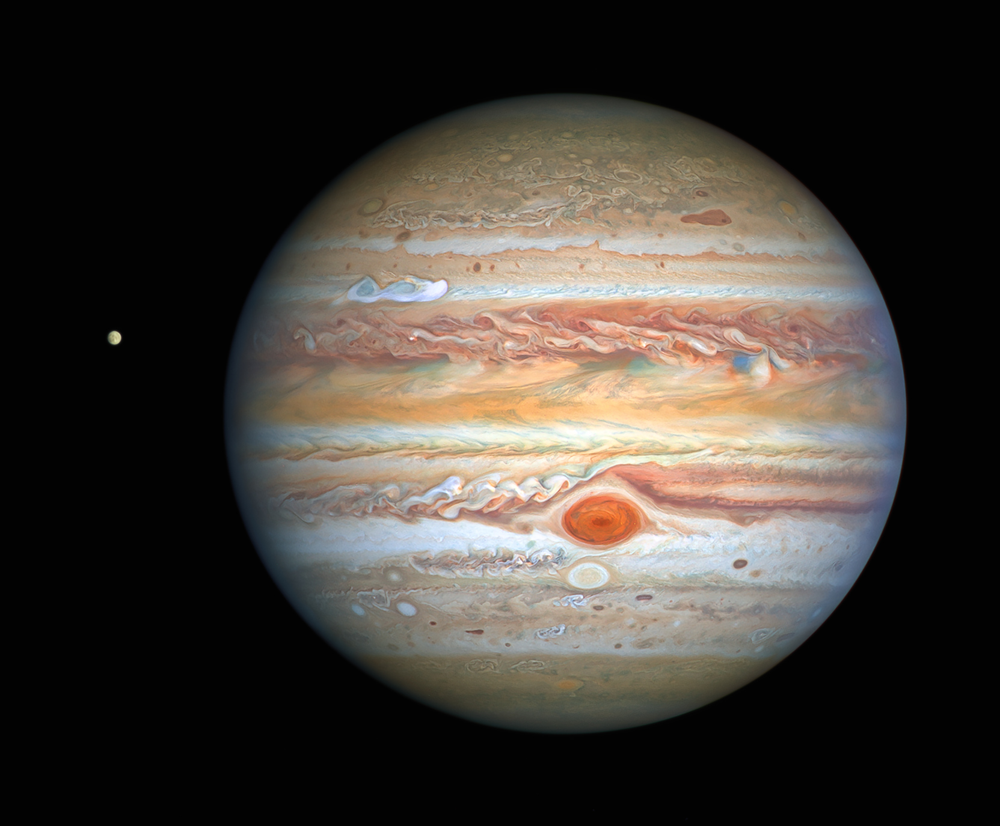

|  |
|
Como no podía ser de otra manera, Júpiter, con más del doble de la masa que el resto de planetas juntos, es el planeta más grande del sistema solar por lo que recibe su nombre del dios entre los dioses del Olimpo, Zeus; Júpiter en la mitología romana. Y es que todo en Júpiter adquiere magnitudes extraordinarias. Para hacernos una idea, en torno a la línea del ecuador de Júpiter cabrían hasta 11 planetas Tierra puestos en fila. La velocidad a la que gira este coloso del sistema solar también es endiablada, pues no solo hay que tener en cuenta que el día en Júpiter dura apenas unas escasas 10 horas mientras que en la Tierra un día dura 24 horas, sino también que su radio es 10 veces mayor que el de nuestro planeta. Esta también es la causa de los fuertes vientos que se producen en la atmósfera de Júpiter, los cuales en el ecuador del planeta pueden alcanzar hasta los 540 kilómetros por hora, dando lugar a las tormentas más impresionantes del sistema solar, como es el caso de la Gran Mancha Roja, una tormenta que según los científicos lleva activa más de 300 años y en la cual cabrían 2 planetas como la Tierra. Sin duda, uno de los aspectos más fascinantes de Júpiter es su atmósfera. De hecho, Júpiter es conocido por sus distintivos cinturones y zonas: bandas de nubes blancas y rojizas que envuelven el planeta y le dan un aspecto realmente impresionante. Se cree que las bandas más oscuras se corresponden con columnas de gases que contienen azufre y fósforo que se elevan desde el interior más cálido del gigante gaseoso. |